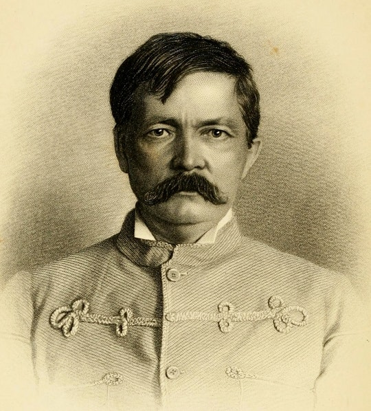
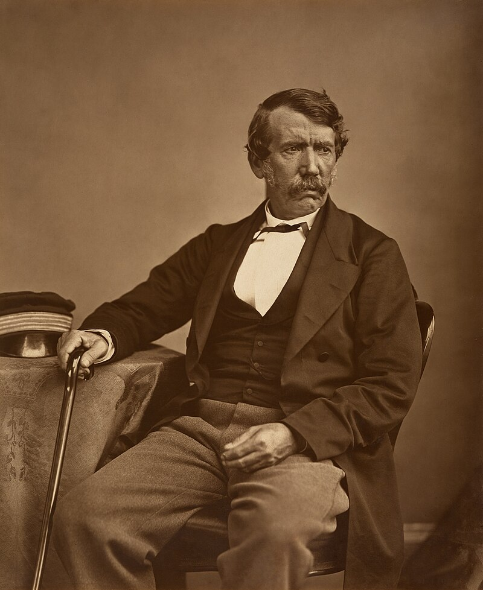
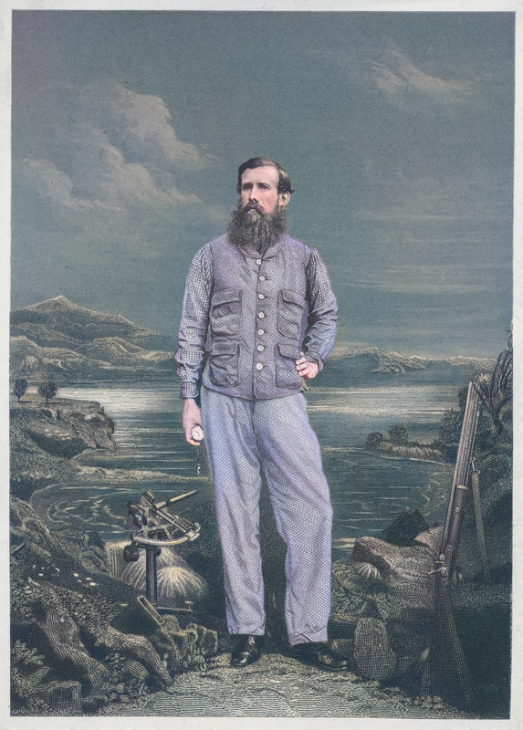
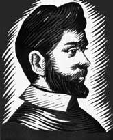
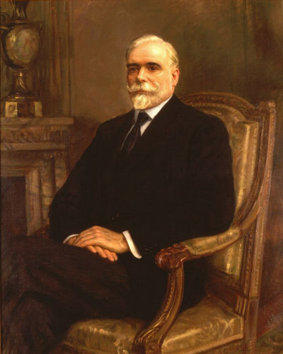
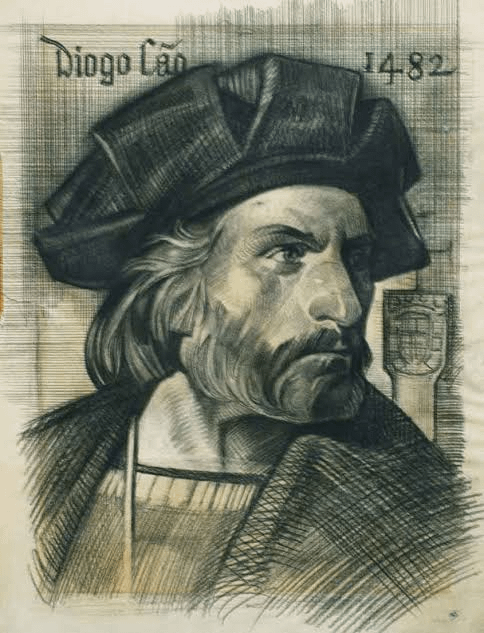

(1841-1904) Conhecido por suas expedições na África Central, Stanley é famoso por encontrar o missionário e explorador David Livingstone em 1871. Ele também explorou o rio congo.(1813-1873) Missionário e explorador escoês, Livingstone é conhecido por suas viagens pela África,onde documentou geográfia,faunas e culturas locais. explorou regiões que hj são parte da Zâmbia e do Malawi(1827-1864) Speke é conhecido por suas expedições para localizar as fontes do rio Nilo, particularmente os lagos victoria e Tanganica.(1510-1584) Um dos primeiros colonizadores de Angola, ele foi fundador da cidade de Luanda em 1576 e desempenhou um papel importante na exploração e colonização da região(1823-1868) Conhecido como "Capitão Angola", ele foi um explorador e naturalista que contribuiu para o crescimento geográfico e etnográfico de Angola(c.1450 -c 1486) foi um explorador portuguê que desempenhou um papel crucial na exploração da costa da África Ocidental, especialmente na região que hoje corresponde a Angola e o Congo.